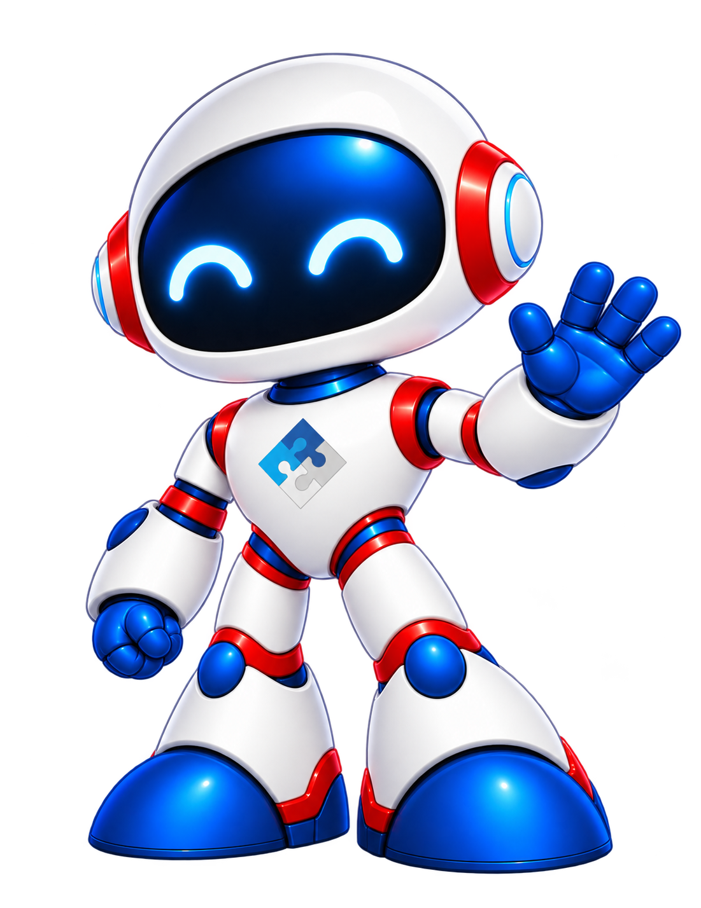

Listening. Working.
Dex’s working state lets you know your teammate is on the task.
DTS ENGINEERING EXPERT
Meet Dex. Your AI agent, working live inside
Siemens NX CAD and CAM.
Engineering expertise. A friendly new face.

01 / MEET DEX
Meet the newest member of your engineering team. Dex brings a calm, practical approach to AI, right where your work happens.
Friendly by design. Precise in conversation. When something needs clarification, Dex asks.
Get to know your teammate02 / INSIDE YOUR WORKFLOW
Dex works live inside Siemens NX.
One friendly AI agent, across CAD and CAM.
MEET YOUR IN-APP EXPERT
Dex is the face of DTS_Ai_Agent: an AI agent built for the Siemens NX CAD and CAM environment.
Like an experienced applications engineer:
friendly, calm, and practical.
03 / DEX IN ACTION
Get to know Dex.
Watch the introduction below.
The video could not be played. Open the video.
04 / A LITTLE PERSONALITY. A LOT OF PURPOSE.
A friendly face for every part of the conversation.
Dex’s working state lets you know your teammate is on the task.
When Dex needs your input, a question card brings the conversation back to you.
A happy Dex signals that the task is finished. A small detail that feels human.
THE PEOPLE BEHIND THE INTELLIGENCE
Dex stands for DTS Engineering Expert. Created and owned by Dream Technology System Pte. Ltd. in Singapore, Dex brings a friendly new face to the DTS engineering family.
From product design to manufacturing, DTS helps engineering teams navigate digital transformation.
Meet Dream Technology SystemA FEW GOOD QUESTIONS
Dex is the DTS Engineering Expert, the friendly character behind DTS_Ai_Agent. Dex is created and owned by Dream Technology System Pte. Ltd., Singapore.
Dex works live inside Siemens NX, across CAD and CAM. Talk to DTS to discuss your NX environment and the workflows you would like to explore.
Dex asks instead of guessing. A question card in the agent panel lets you provide the input needed to continue.
Watch the introduction on this page, then contact DTS to discuss Dex for your team, including availability, setup, and your specific engineering needs.
YOUR NEXT CHAPTER IN ENGINEERING
Say hello to Dex. Let’s explore what comes next.
Talk to DTS